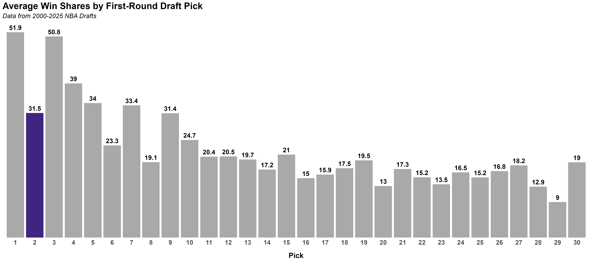
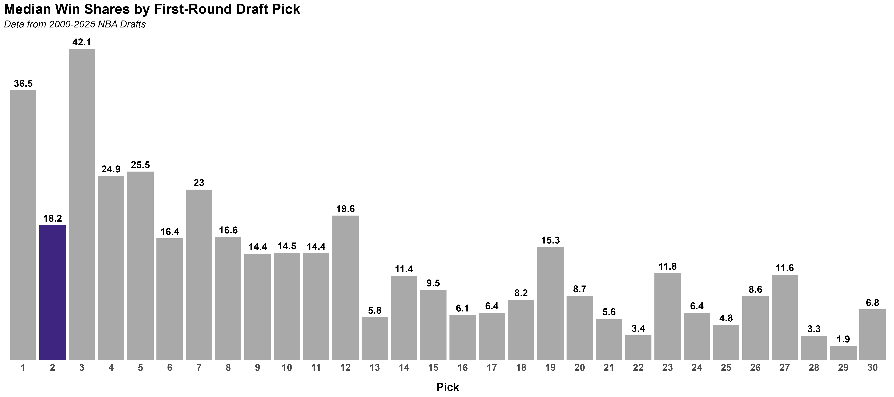
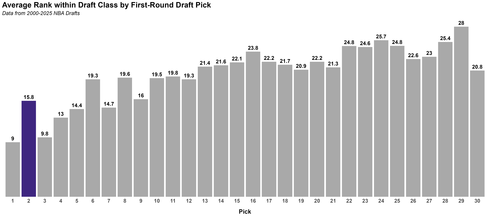
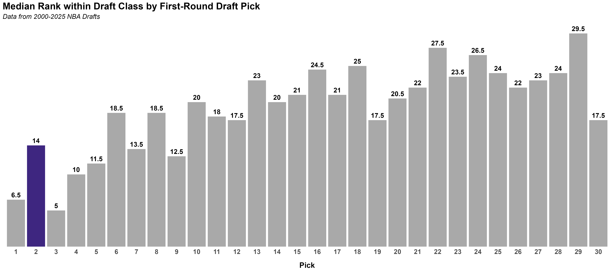
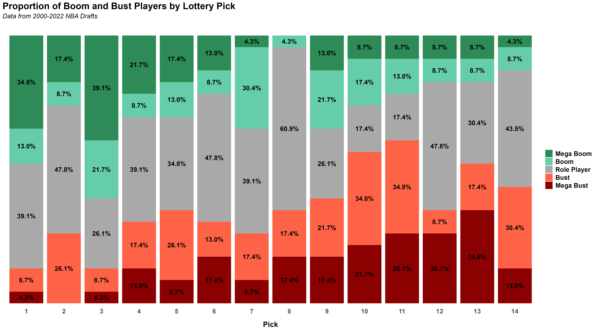

What is the value of a second overall pick?
Since landing the second overall pick, there’s been a renewed sense of excitement among Jazz fans. On June 23, the Jazz will add an elite prospect to an already young and talented roster. But one question remains: what is the true value of the second overall pick, and is the “second-pick curse” real? To find out, let’s take a look at the history of second overall picks.
To evaluate the value of the second overall pick, I looked at the win shares of every first-round pick since 2000. To provide a more complete picture, I examined both the average and median win shares for each draft position. Average win shares help measure the overall value a pick has produced, while median win shares provide a better sense of what teams can typically expect from that pick.


The results raise some immediate concerns about the value of the second overall pick. Since 2000, second overall picks have averaged just 31.5 win shares; the lowest mark of any pick in the top five and nearly identical to the average value of the ninth overall pick. More concerning, the second pick trails both the first overall pick (51.9 win shares) and the third overall pick (50.8 win shares) by a substantial margin.
The median results offer little additional optimism. With a median of just 18.2 win shares, the second overall pick is more comparable to picks six through 12 than to the other selections in the top five. In fact, the typical second overall pick has produced less than half the value of the typical first overall pick (36.5 win shares) and third overall pick (42.1 win shares).
It’s important to note that these results include every draft since 2000, including several recent draft classes whose players have not yet had enough time to reach their full potential. To account for this, I compared players within their own draft classes and calculated the average rank of each draft position based on win shares. By evaluating picks relative to their peers, this approach helps control for differences in career length and provides a clearer picture of how each pick has performed within its draft class.


The concerning trend continues. The second overall pick has the worst average and median draft-class rank of any selection in the top five. In fact, the median second overall pick ranks 14th within its draft class by win shares, meaning its typical value has been closer to that of a mid-first-round pick than a top-three selection. By comparison, the first and third overall picks have median ranks of 6.5 and 6, respectively.
While average and median values help us understand the typical return of each pick, they don’t tell us much about the range of outcomes. To examine individual player success, I looked at every lottery pick from 2000 through 2022. More recent picks were excluded to ensure players had sufficient time to establish themselves before being classified as a boom or bust.
To account for differences in career length, each player was assigned a win shares per year metric. Players were then categorized based on their performance relative to the lottery-pick distribution. Players who never appeared in an NBA game or finished more than one standard deviation below the mean were classified as “mega busts.” Players between 0.5 and 1 standard deviation below the mean were classified as “busts,” those within 0.5 standard deviations of the mean were classified as “role players,” those between 0.5 and 1 standard deviation above the mean were classified as “booms,” and those more than 1 standard deviation above the mean were classified as “mega booms.”
The distribution of outcomes across lottery picks is shown below. Using the boom, bust, and role-player classifications described above, we can see how often each draft position has produced stars, solid contributors, and disappointing selections since 2000.

Despite producing relatively few booms and mega booms, the second overall pick does show some encouraging signs. Most notably, it is the only lottery pick since 2000 that has not produced a single mega bust. Additionally, the combined rate of busts and mega busts is the third lowest among lottery picks, trailing only the first and third selections.
While these results may not be entirely encouraging, they suggest that the second overall pick has historically been defined more by consistency than star power. Relative to its draft position, the second pick has not produced the level of value teams would expect from a top-three selection. However, it has also been one of the safer picks in the lottery, producing relatively few busts and no mega busts since 2000. If history is any guide, the Jazz may be less likely to land a franchise-altering superstar than fans hope, but they are also less likely to walk away empty-handed.
Finally, I wanted to look beyond the averages and examine the actual players selected at each draft position. To provide a sense of the range of outcomes, I identified the three best-performing players, three worst-performing players, and three players closest to the middle of the distribution for each pick based on win shares per year. The tabs below highlight these players and provide a more tangible picture of the value each draft position has historically produced.
If nothing else, the table above shows that franchise-changing talent can still be found with the second overall pick. Players such as Kevin Durant, LaMarcus Aldridge, and Chet Holmgren demonstrate the upside that exists at the top of the draft (assuming Chet’s performance in the Western Conference Finals isn’t a sign of things to come).
Conclusion
So, is the second-pick curse real? The answer appears to be yes; at least to some extent. Since 2000, the second overall pick has consistently underperformed expectations relative to other top-three selections, producing less value on average and ranking surprisingly low within its own draft classes. By almost any measure, teams selecting second have received returns more comparable to a mid-first-round pick than an elite draft position.
At the same time, the data suggest that the curse may be overstated. While second overall picks have produced fewer stars than expected, they have also been remarkably reliable. The second pick has avoided the catastrophic failures that have plagued other lottery positions, producing no mega busts and relatively few busts overall since 2000.
Of course, historical trends do not determine the future. The top of the 2026 draft class appears loaded with talent, and there is no reason prospects such as AJ Dybantsa, Darryn Peterson, Cam Boozer, or Caleb Wilson cannot outperform the history of the second overall pick. If anything, the lesson for Jazz fans is to balance excitement with realistic expectations. The second overall pick is far from a guaranteed superstar, but it remains one of the most valuable assets in basketball; and this summer gives us another opportunity to prove that history is not destiny.